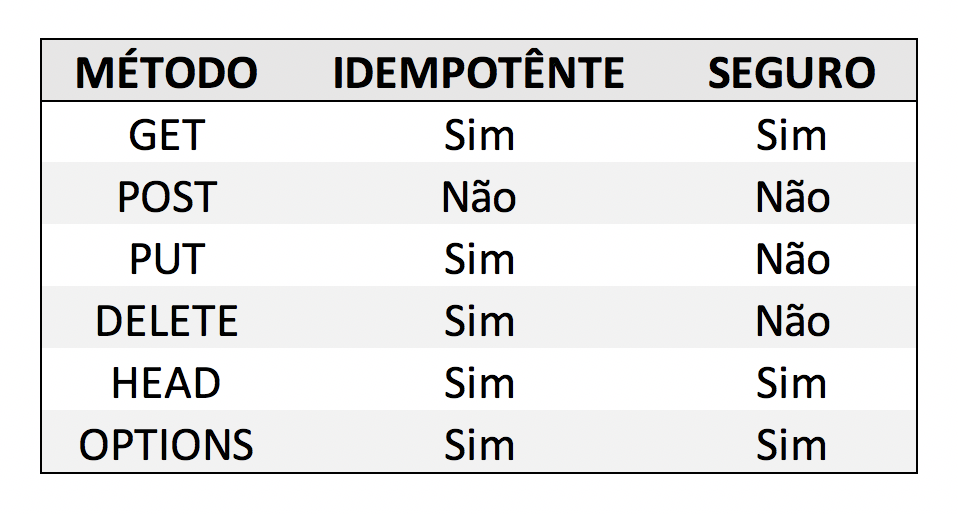

HTTP Methods:
    - Define um conjunto de métodos HTTP
    - Indica a ação que o cliente deseja operar 
    - Podem ser chamados de Verbos HTTP
    - Cada um possui a sua semântica
    - características:
            Seguro:
                - Não altera o estado do servidor
                - Somente leitura
                - Cliente não solicita alteração
                - Não há carga extra para o servidor
                - O servidor é responsavél em manter o método seguro
                - Quais são:
                    GET ------ GET/search.htmlHTTP/1.1
                    HEAD
                    OPTIONS

            Idempotente:
                - Ao executar o método a resposata deverá ser sempre a mesma
                
                - Quais são:
                    Todos os seguros
                    PUT
                    DELETE

                - Status code poderá ser diferente
                - O servidor tem a responsabilidade de retornar dados da mesma maneira
                - Essa especificação não é garantia de que todos os servidores irão aplicar o conceito corretamente

obs: Nem todos são seguro ou idempotente <br>

